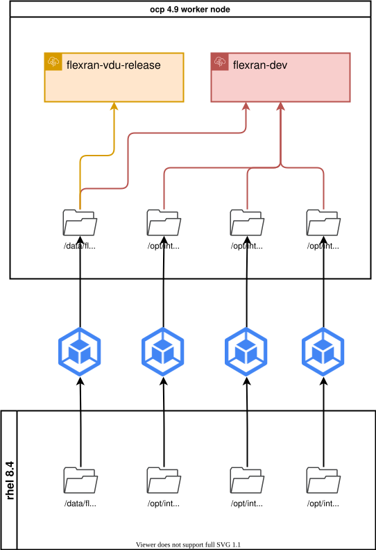
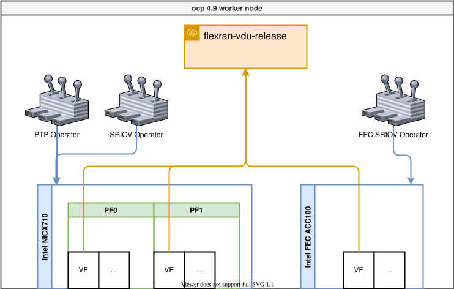
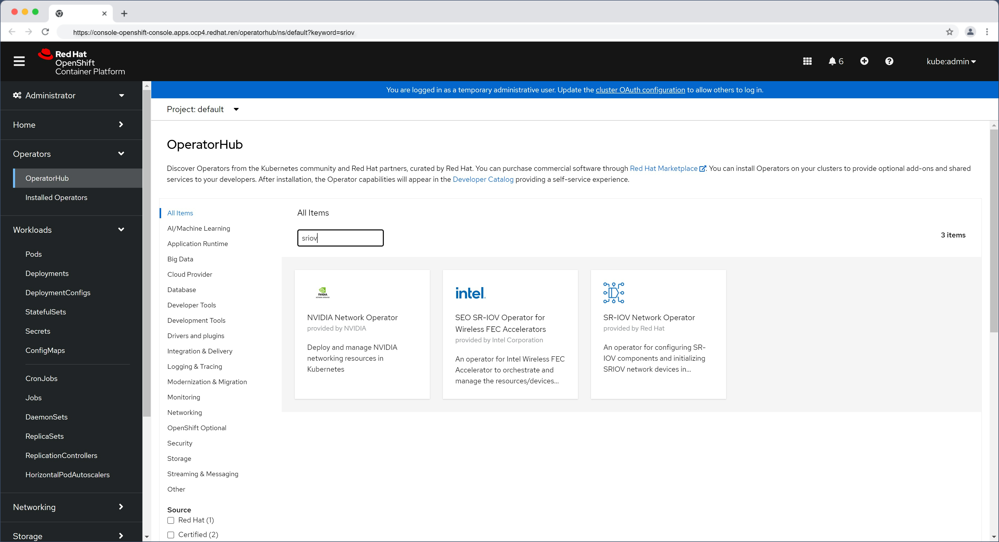

FlexRAN 20.11 enable on ocp4
本文描述，如何把 intel 的 oran 解决方案 flexran ，移植到 openshift 平台之上。
容器镜像构建和运行架构，文件目录结构：

容器运行的时候，和operator以及硬件的关系结构图：

问题
- ptp服务配置了，vbbu 怎么用？
prepare public cloud env
我们先在公网环境里面编译镜像，并且上传到quay.io
basic init setup
# vultr, ssh enhance
# disable user/passwd login
# ChallengeResponseAuthentication no
# PasswordAuthentication no
# UsePAM no
sed -i 's/PasswordAuthentication yes/PasswordAuthentication no/g' /etc/ssh/sshd_config
sed -i 's/UsePAM yes/UsePAM no/g' /etc/ssh/sshd_config
systemctl restart sshd
ssh root@v.redhat.ren -o PubkeyAuthentication=no
# root@v.redhat.ren: Permission denied (publickey,gssapi-keyex,gssapi-with-mic).
subscription-manager register --auto-attach --username ******** --password ********
subscription-manager release --list
subscription-manager release --set=8.4
subscription-manager repos \
--enable="codeready-builder-for-rhel-8-x86_64-rpms"
dnf -y install https://dl.fedoraproject.org/pub/epel/epel-release-latest-8.noarch.rpm
dnf install -y byobu htop fail2ban
cat << EOF > /etc/fail2ban/jail.d/wzh.conf
[sshd]
enabled = true
# [recidive]
# enabled = true
EOF
systemctl enable --now fail2ban
cat << EOF > /etc/fail2ban/jail.d/wzh.conf
[sshd]
enabled = true
[recidive]
enabled = true
EOF
systemctl restart fail2ban
# byobu
dnf update -y
rebootinstall ocp rhcos rt kernel
mkdir -p /data/ostree
export BUILDNUMBER=4.9.5
wget -O openshift-client-linux-${BUILDNUMBER}.tar.gz https://mirror.openshift.com/pub/openshift-v4/clients/ocp/${BUILDNUMBER}/openshift-client-linux-${BUILDNUMBER}.tar.gz
wget -O openshift-install-linux-${BUILDNUMBER}.tar.gz https://mirror.openshift.com/pub/openshift-v4/clients/ocp/${BUILDNUMBER}/openshift-install-linux-${BUILDNUMBER}.tar.gz
tar -xzf openshift-client-linux-${BUILDNUMBER}.tar.gz -C /usr/local/sbin/
tar -xzf openshift-install-linux-${BUILDNUMBER}.tar.gz -C /usr/local/sbin/
oc image extract --path /:/data/ostree --registry-config /data/pull-secret.json ` curl -s https://mirror.openshift.com/pub/openshift-v4/x86_64/clients/ocp/$BUILDNUMBER/release.txt | grep machine-os-content | awk '{print $2}' `
mkdir -p /data/dnf
mv /data/ostree/extensions /data/dnf/
rm -rf /data/ostree
mkdir -p /etc/yum.repos.d
cat > /etc/yum.repos.d/rt.repo << 'EOF'
[rt]
name=rt
baseurl=file:///data/dnf/extensions
gpgcheck=0
EOF
dnf install -y kernel-rt-core kernel-rt-devel kernel-rt-modules kernel-rt-modules-extra kernel-headers libhugetlbfs-devel zlib-devel numactl-devel cmake gcc gcc-c++
rebootbuild flexran with intel icc/icx
dnf groupinstall -y 'Development Tools'
dnf install -y cmake
# flexran install on host
# yum install centos-release-scl devtoolset-8 -y
# install intel icc icx
cd /data/down
tar zvxf system_studio_2019_update_3_ultimate_edition_offline.tar.gz
cd /data/down/system_studio_2019_update_3_ultimate_edition_offline
cat > s.cfg << 'EOF'
ACCEPT_EULA=accept
CONTINUE_WITH_OPTIONAL_ERROR=yes
PSET_INSTALL_DIR=/opt/intel
CONTINUE_WITH_INSTALLDIR_OVERWRITE=yes
COMPONENTS=ALL
PSET_MODE=install
ACTIVATION_SERIAL_NUMBER=******************
ACTIVATION_TYPE=serial_number
EOF
./install.sh -s s.cfg
echo "source /opt/intel/system_studio_2019/bin/compilervars.sh intel64" >> /root/.bashrc
cd /data/down/
# wget https://registrationcenter-download.intel.com/akdlm/irc_nas/18236/l_BaseKit_p_2021.4.0.3422_offline.sh
bash l_BaseKit_p_2021.4.0.3422_offline.sh
# source /opt/intel/oneapi/setvars.sh
echo "source /opt/intel/oneapi/setvars.sh" >> /root/.bashrc download dpdk and patch, and comile flexran sdk
cd /data/down/
# wget https://fast.dpdk.org/rel/dpdk-19.11.tar.xz
tar xf dpdk-19.11.tar.xz
rm -rf /opt/dpdk-19.11
mv /data/down/dpdk-19.11 /opt
export RTE_SDK=/opt/dpdk-19.11
cd $RTE_SDK
patch -p1 < /data/down/dpdk_19.11_20.11.7.patch
# patch flexran
pip3 install meson ninja
# dnf install -y ninja-build
# dnf install -y cmake
rm -rf /data/flexran/
mkdir -p /data/flexran/
cd /data/down
tar zvxf FlexRAN-20.11.tar.gz -C /data/flexran/
export RTE_SDK=/opt/dpdk-19.11
cd /data/flexran
./extract.sh
cd /data/flexran
source set_env_var.sh -d
# for intel: /opt/intel/system_studio_2019/
# for dpdk: /opt/dpdk-19.11
# sourcing /opt/intel/system_studio_2019//bin/iccvars.sh intel64 -platform linux
# Set RTE_SDK=/opt/dpdk-19.11
# Set RTE_TARGET=x86_64-native-linuxapp-icc
# ====================================================================================
# Environment Variables:
# ====================================================================================
# RTE_SDK=/opt/dpdk-19.11
# RTE_TARGET=x86_64-native-linuxapp-icc
# WIRELESS_SDK_TARGET_ISA=avx512
# RPE_DIR=/data/flexran/libs/ferrybridge
# CPA_DIR=/data/flexran/libs/cpa
# ROE_DIR=/data/flexran/libs/roe
# XRAN_DIR=/data/flexran/xran
# DIR_WIRELESS_SDK_ROOT=/data/flexran/sdk
# SDK_BUILD=build-avx512-icc
# DIR_WIRELESS_SDK=/data/flexran/sdk/build-avx512-icc
# FLEXRAN_SDK=/data/flexran/sdk/build-avx512-icc/install
# DIR_WIRELESS_FW=/data/flexran/framework
# DIR_WIRELESS_TEST_4G=/data/flexran/tests/lte
# DIR_WIRELESS_TEST_5G=/data/flexran/tests/nr5g
# DIR_WIRELESS_TABLE_5G=/data/flexran/bin/nr5g/gnb/l1/table
# ====================================================================================
./flexran_build.sh -e -r 5gnr_sub6 -i avx512 -m sdk
# https://www.i4k.xyz/article/qq_40982287/119571504
sed -i "s/.ndo_tx_timeout = kni_net_tx_timeout,/\/\/.ndo_tx_timeout = kni_net_tx_timeout,/g" /opt/dpdk-19.11/kernel/linux/kni/kni_net.c
sed -i 's/DEFAULT_PATH=.*/DEFAULT_PATH=\/opt\/intel\/system_studio_2019\/bin\/iccvars.sh/' /opt/dpdk-19.11/usertools/dpdk-setup.sh
sed -i 's/CONFIG_RTE_BBDEV_SDK_AVX2=.*/CONFIG_RTE_BBDEV_SDK_AVX2=y/' /opt/dpdk-19.11/config/common_base
sed -i 's/CONFIG_RTE_BBDEV_SDK_AVX512=.*/CONFIG_RTE_BBDEV_SDK_AVX512=y/' /opt/dpdk-19.11/config/common_base
# DEFAULT_PATH=/opt/intel/system_studio_2019/bin/iccvars.sh
# sed -i 's/CONFIG_RTE_BUILD_SHARED_LIB=.*/CONFIG_RTE_BUILD_SHARED_LIB=y/' /opt/dpdk-19.11/config/common_base
sed -i 's/MODULE_CFLAGS += -Wall -Werror/#MODULE_CFLAGS += -Wall -Werror/' /opt/dpdk-19.11/kernel/linux/kni/Makefile
cd /opt/dpdk-19.11/usertools/
./dpdk-setup.sh
# 39
# 62
sed -i 's/#include <linux\/bootmem.h>/\/\/#include <linux\/bootmem.h>/' /data/flexran/libs/cpa/sub6/rec/drv/src/nr_dev.c
# export LD_LIBRARY_PATH=$LD_LIBRARY_PATH:/data/flexran/wls_mod/lib
# export CC=icc
# export DEV_OPT=" -Wl,--exclude-libs,/usr/lib64/libmvec_nonshared.a "
# export LDFLAGS=" -Wl,--exclude-libs,/usr/lib64/libmvec_nonshared.a "
# export RTE_LIBS=" -Wl,--exclude-libs,/usr/lib64/libmvec_nonshared.a "
# -Wl,--exclude-libs=libmvec_nonshared.a
# -Wl,--allow-multiple-definition
sed -i 's/@$(LD) -o $@ $(LD_FLAGS) -Wl,-L $(BUILDDIR) $(INC_LIBS) -lm -lrt -lpthread/@$(LD) -o $@ $(LD_FLAGS) -Wl,-L $(BUILDDIR) $(INC_LIBS) -lm -lrt -lpthread -Wl,--allow-multiple-definition/' /data/flexran/build/nr5g/gnb/l1app/makefile_phy
sed -i 's/@$(LD) -o $@ $(LD_FLAGS) -Wl,-L $(BUILDDIR) $(INC_LIBS) -lm -lrt -lpthread/@$(LD) -o $@ $(LD_FLAGS) -Wl,-L $(BUILDDIR) $(INC_LIBS) -lm -lrt -lpthread -Wl,--allow-multiple-definition -Wl,-lrte_port -Wl,-lrte_cryptodev -Wl,-lrte_eventdev/' /data/flexran/build/nr5g/gnb/testapp/linux/makefile_phy
sed -i 's/@$(LD) -o $@ $(LD_FLAGS) -Wl,-L $(BUILDDIR) $(INC_LIBS) -lm -lrt -lpthread/@$(LD) -o $@ $(LD_FLAGS) -Wl,-L $(BUILDDIR) $(INC_LIBS) -lm -lrt -lpthread -Wl,--allow-multiple-definition/' /data/flexran/build/lte/l1app_nbiot/makefile
sed -i 's/@$(LD) -o $@ $(LD_FLAGS) -Wl,-L $(BUILDDIR) $(INC_LIBS) -lm -lrt -lpthread/@$(LD) -o $@ $(LD_FLAGS) -Wl,-L $(BUILDDIR) $(INC_LIBS) -lm -lrt -lpthread -Wl,--allow-multiple-definition/' /data/flexran/build/lte/bbdevapp/Makefile
sed -i 's/@$(LD) -o $@ $(LD_FLAGS) -Wl,-L $(BUILDDIR) $(INC_LIBS) -lm -lrt -lpthread/@$(LD) -o $@ $(LD_FLAGS) -Wl,-L $(BUILDDIR) $(INC_LIBS) -lm -lrt -lpthread -Wl,--allow-multiple-definition/' /data/flexran/build/lte/l1app/makefile
sed -i 's/@$(LD) -o $@ $(LD_FLAGS) -Wl,-L $(BUILDDIR) $(INC_LIBS) -lm -lrt -lpthread/@$(LD) -o $@ $(LD_FLAGS) -Wl,-L $(BUILDDIR) $(INC_LIBS) -lm -lrt -lpthread -Wl,--allow-multiple-definition/' /data/flexran/build/nr5g/gnb/bbdevapp/Makefile
sed -i 's/@$(CC) -o $(APP) $(OBJS) $(RTE_LIBS) $(LDFLAGS)/@$(CC) -o $(APP) $(OBJS) $(RTE_LIBS) $(LDFLAGS) -Wl,--allow-multiple-definition/' /data/flexran/build/nr5g/gnb/testmac/makefile
sed -i 's/@$(CC) -o $(APP) $(OBJS) $(RTE_LIBS) $(LDFLAGS)/@$(CC) -o $(APP) $(OBJS) $(RTE_LIBS) $(LDFLAGS) -Wl,--allow-multiple-definition/' /data/flexran/build/lte/l1app_nbiot/makefile
# -Wl,-lrte_port -Wl,-lrte_cryptodev -Wl,-lrte_eventdev
# build/nr5g/gnb/testapp/linux/makefile_phy:540
export LD_LIBRARY_PATH=$LD_LIBRARY_PATH:/data/flexran/wls_mod/lib
cd /data/flexran
./flexran_build.sh -e -r 5gnr_sub6 -i avx512 -b
# dnf install -y podman-docker
# export RTE_SDK=/opt/dpdk-19.11
# cd /data/flexran
# bash ./flexran_build_dockerfile.sh -v -e -i avx512 -r 5gnr_sub6 -b -m all
# podman image ls
# # REPOSITORY TAG IMAGE ID CREATED SIZE
# # flexran.docker.registry/flexran_vdu latest 8c5460a697e6 16 minutes ago 1.36 GB
# # quay.io/centos/centos 7.9.2009 8652b9f0cb4c 17 months ago 212 MB
# podman tag flexran.docker.registry/flexran_vdu:latest quay.io/nepdemo/flexran_vdu:flexran-20.11-dpdk-20.11.3-ocp4.9.5-centos-7.9
# podman push quay.io/nepdemo/flexran_vdu:flexran-20.11-dpdk-20.11.3-ocp4.9.5-centos-7.9vsftpd
我们需要在本地准备一个ftp服务器，来承载rt-kernel的repo，后面编译容器镜像，需要访问这个临时的repo
dnf install -y vsftpd
sed -i 's/anonymous_enable=NO/anonymous_enable=YES/g' /etc/vsftpd/vsftpd.conf
systemctl disable --now firewalld
systemctl enable --now vsftpd
mkdir -p /var/ftp/dnf
mount --bind /data/dnf /var/ftp/dnf
chcon -R -t public_content_t /var/ftp/dnf
find /data/dnf/extensions -type f -exec chmod 644 {} \;
chmod +x /etc/rc.d/rc.local
cat << EOF >>/etc/rc.d/rc.local
iptables -A INPUT -d 10.88.0.1 -j ACCEPT
iptables -A INPUT -p tcp --dport 21 -j REJECT
EOF
systemctl enable --now rc-localflexran_vdu for rhel8.4
dnf install -y podman-docker
export RTE_SDK=/opt/dpdk-19.11
cd /data/flexran
bash ./flexran_build_dockerfile.wzh.sh -v -e -i avx512 -r 5gnr_sub6 -b -m all
podman tag flexran.docker.registry/flexran_vdu:latest quay.io/nepdemo/flexran_vdu:flexran-20.11-dpdk-19.11-ocp4.9.5-ubi-8.4
podman push quay.io/nepdemo/flexran_vdu:flexran-20.11-dpdk-19.11-ocp4.9.5-ubi-8.4copy flexran sdk to image
cat << 'EOF' > /data/flexran.sdk.dockerfile
FROM registry.access.redhat.com/ubi8/ubi:8.4
RUN dnf repolist
RUN sed -i 's|enabled=1|enabled=0|g' /etc/yum/pluginconf.d/subscription-manager.conf
RUN sed -i 's|$releasever|8.4|g' /etc/yum.repos.d/redhat.repo
RUN sed -i '/codeready-builder-for-rhel-8-x86_64-rpms/,/\[/ s/enabled = 0/enabled = 1/' /etc/yum.repos.d/redhat.repo
RUN mv -f /etc/yum.repos.d/ubi.repo /etc/yum.repos.d/ubi.repo.bak
RUN dnf -y update
RUN dnf -y install rsync
COPY flexran /data/flexran
EOF
cd /data
podman build --squash -t quay.io/nepdemo/flexran_basekit:flexran-sdk-20.11-ocp-4.9.5-ubi-8.4 -f flexran.sdk.dockerfile ./
podman push quay.io/nepdemo/flexran_basekit:flexran-sdk-20.11-ocp-4.9.5-ubi-8.4copy intel icc to image
cat << 'EOF' > /opt/intel/flexran.intel.icc.dockerfile
FROM registry.access.redhat.com/ubi8/ubi:8.4
RUN dnf repolist
RUN sed -i 's|enabled=1|enabled=0|g' /etc/yum/pluginconf.d/subscription-manager.conf
RUN sed -i 's|$releasever|8.4|g' /etc/yum.repos.d/redhat.repo
RUN sed -i '/codeready-builder-for-rhel-8-x86_64-rpms/,/\[/ s/enabled = 0/enabled = 1/' /etc/yum.repos.d/redhat.repo
RUN mv -f /etc/yum.repos.d/ubi.repo /etc/yum.repos.d/ubi.repo.bak
RUN dnf -y update
RUN dnf -y install rsync
COPY system_studio_2019 /opt/intel/system_studio_2019
COPY licenses /opt/intel/licenses
COPY packagemanager /opt/intel/packagemanager
EOF
cd /opt/intel
podman build --squash -t quay.io/nepdemo/flexran_basekit:intel.icc-21.11-ocp-4.9.5-ubi-8.4 -f flexran.intel.icc.dockerfile ./
podman push quay.io/nepdemo/flexran_basekit:intel.icc-21.11-ocp-4.9.5-ubi-8.4copy intel icx to image
cat << 'EOF' > /opt/intel/flexran.intel.icx.dockerfile
FROM registry.access.redhat.com/ubi8/ubi:8.4
RUN dnf repolist
RUN sed -i 's|enabled=1|enabled=0|g' /etc/yum/pluginconf.d/subscription-manager.conf
RUN sed -i 's|$releasever|8.4|g' /etc/yum.repos.d/redhat.repo
RUN sed -i '/codeready-builder-for-rhel-8-x86_64-rpms/,/\[/ s/enabled = 0/enabled = 1/' /etc/yum.repos.d/redhat.repo
RUN mv -f /etc/yum.repos.d/ubi.repo /etc/yum.repos.d/ubi.repo.bak
RUN dnf -y update
RUN dnf -y install rsync
COPY oneapi /opt/intel/oneapi
COPY licenses /opt/intel/licenses
COPY packagemanager /opt/intel/packagemanager
EOF
cd /opt/intel
podman build --squash -t quay.io/nepdemo/flexran_basekit:intel.icx-21.11-ocp-4.9.5-ubi-8.4 -f flexran.intel.icx.dockerfile ./
podman push quay.io/nepdemo/flexran_basekit:intel.icx-21.11-ocp-4.9.5-ubi-8.4build dev docker image with dpdk 19.11
cat << 'EOF' > /opt/flexran.dpdk.dockerfile
FROM registry.access.redhat.com/ubi8/ubi:8.4
RUN dnf repolist
RUN sed -i 's|enabled=1|enabled=0|g' /etc/yum/pluginconf.d/subscription-manager.conf
RUN sed -i 's|$releasever|8.4|g' /etc/yum.repos.d/redhat.repo
RUN sed -i '/codeready-builder-for-rhel-8-x86_64-rpms/,/\[/ s/enabled = 0/enabled = 1/' /etc/yum.repos.d/redhat.repo
RUN mv -f /etc/yum.repos.d/ubi.repo /etc/yum.repos.d/ubi.repo.bak
RUN echo -e "\
[localrepo]\n\
name=LocalRepo\n\
baseurl=ftp://10.88.0.1/dnf/extensions/\n\
enabled=1\n\
gpgcheck=0" \
> /etc/yum.repos.d/local.repo
RUN dnf -y update
RUN dnf -y install rsync
RUN dnf -y install kernel-rt-core kernel-rt-devel kernel-rt-modules kernel-rt-modules-extra kernel-headers libhugetlbfs-devel zlib-devel numactl-devel cmake gcc gcc-c++ libhugetlbfs-utils libhugetlbfs-devel libhugetlbfs numactl-devel pciutils libaio libaio-devel net-tools libpcap python3-pip
RUN dnf install -y --allowerasing coreutils
RUN dnf groupinstall -y development server
RUN pip-3 install meson ninja
COPY dpdk-19.11 /opt/dpdk-19.11
# RUN ln -s /opt/dpdk-stable-20.11.3 /opt/dpdk-20.11
EOF
cd /opt/
podman build --squash -t quay.io/nepdemo/flexran_basekit:dpdk-19.11-ocp-4.9.5-ubi-8.4 -f flexran.dpdk.dockerfile ./
podman push quay.io/nepdemo/flexran_basekit:dpdk-19.11-ocp-4.9.5-ubi-8.4 build in nepdemo env
在nepdemo的内网环境中，编译镜像，并将镜像推送到nepdemo的镜像仓库
create a image registry to hold the large container image
# found a centos7 host
mkdir /etc/crts/ && cd /etc/crts
openssl req \
-newkey rsa:2048 -nodes -keyout redhat.ren.key \
-x509 -days 3650 -out redhat.ren.crt -subj \
"/C=CN/ST=GD/L=SZ/O=Global Security/OU=IT Department/CN=*.redhat.ren"
cp /etc/crts/redhat.ren.crt /etc/pki/ca-trust/source/anchors/
update-ca-trust extract
mkdir -p /home/data/registry
cd /data
# tar zxf registry.tgz
yum -y install docker-distribution
cat << EOF > /etc/docker-distribution/registry/config.yml
version: 0.1
log:
fields:
service: registry
storage:
cache:
layerinfo: inmemory
filesystem:
rootdirectory: /home/data/registry
delete:
enabled: true
http:
addr: :5443
tls:
certificate: /etc/crts/redhat.ren.crt
key: /etc/crts/redhat.ren.key
EOF
# systemctl restart docker
# systemctl stop docker-distribution
systemctl enable --now docker-distributionbuild container image for intel sdk
cat << EOF >> /etc/hosts
192.168.123.252 reg-tmp.redhat.ren
EOF
export REG_TMP="reg-tmp.redhat.ren:5443"
podman tag flexran.docker.registry/flexran_vdu:latest ${REG_TMP}/nepdemo/flexran_vdu:flexran-20.11-dpdk-19.11-ocp4.9.5-ubi-8.4
podman push --tls-verify=false ${REG_TMP}/nepdemo/flexran_vdu:flexran-20.11-dpdk-19.11-ocp4.9.5-ubi-8.4
# copy flexran sdk to image
cd /data
podman build --squash -t ${REG_TMP}/nepdemo/flexran_basekit:flexran-sdk-20.11-ocp-4.9.5-ubi-8.4 -f flexran.sdk.dockerfile ./
podman push --tls-verify=false ${REG_TMP}/nepdemo/flexran_basekit:flexran-sdk-20.11-ocp-4.9.5-ubi-8.4
# dpdk-kmods
cd /data/git
podman build --squash -t ${REG_TMP}/nepdemo/flexran_vdu:dpdk-kmods-ocp-4.9.5-ubi -f flexran.sdk.dockerfile ./
podman push --tls-verify=false ${REG_TMP}/nepdemo/flexran_vdu:dpdk-kmods-ocp-4.9.5-ubi
# copy intel icc to image
cd /opt/intel
podman build --squash -t ${REG_TMP}/nepdemo/flexran_basekit:intel.icc-21.11-ocp-4.9.5-ubi-8.4 -f flexran.intel.icc.dockerfile ./
podman push --tls-verify=false ${REG_TMP}/nepdemo/flexran_basekit:intel.icc-21.11-ocp-4.9.5-ubi-8.4
# copy intel icx to image
cd /opt/intel
podman build --squash -t ${REG_TMP}/nepdemo/flexran_basekit:intel.icx-21.11-ocp-4.9.5-ubi-8.4 -f flexran.intel.icx.dockerfile ./
podman push --tls-verify=false ${REG_TMP}/nepdemo/flexran_basekit:intel.icx-21.11-ocp-4.9.5-ubi-8.4
# build dev docker image with dpdk 19.11
cat << 'EOF' > /opt/flexran.dpdk.dockerfile
FROM registry.access.redhat.com/ubi8/ubi:8.4
RUN dnf repolist
RUN sed -i 's|enabled=1|enabled=0|g' /etc/yum/pluginconf.d/subscription-manager.conf
RUN sed -i 's|$releasever|8.4|g' /etc/yum.repos.d/redhat.repo
RUN sed -i 's|cdn.redhat.com|china.cdn.redhat.com|g' /etc/yum.repos.d/redhat.repo
RUN sed -i '/codeready-builder-for-rhel-8-x86_64-rpms/,/\[/ s/enabled = 0/enabled = 1/' /etc/yum.repos.d/redhat.repo
RUN mv -f /etc/yum.repos.d/ubi.repo /etc/yum.repos.d/ubi.repo.bak
RUN echo -e "\
[localrepo]\n\
name=LocalRepo\n\
baseurl=ftp://192.168.122.1/dnf/extensions/\n\
enabled=1\n\
gpgcheck=0" \
> /etc/yum.repos.d/local.repo
RUN dnf -y update
RUN dnf -y install rsync
RUN dnf -y install kernel-rt-core kernel-rt-devel kernel-rt-modules kernel-rt-modules-extra kernel-headers libhugetlbfs-devel zlib-devel numactl-devel cmake gcc gcc-c++ libhugetlbfs-utils libhugetlbfs-devel libhugetlbfs numactl-devel pciutils libaio libaio-devel net-tools libpcap python3-pip
RUN dnf install -y --allowerasing coreutils
RUN dnf groupinstall -y development server
RUN pip-3 install meson ninja
COPY dpdk-19.11 /opt/dpdk-19.11
# RUN ln -s /opt/dpdk-19.11 /opt/dpdk-20.11
EOF
cd /opt/
podman build --squash -t ${REG_TMP}/nepdemo/flexran_basekit:dpdk-19.11-ocp-4.9.5-ubi-8.4 -f flexran.dpdk.dockerfile ./
podman push --tls-verify=false ${REG_TMP}/nepdemo/flexran_basekit:dpdk-19.11-ocp-4.9.5-ubi-8.4 deploy on ocp 4.9.5
镜像都准备好了，我们开始在openshift4 上进行部署测试。
set security for temp image registry
我们临时创建了一个镜像仓库，那么我们就要把这个配置放到集群里面去，主要是让ocp集群，不要检查这个新镜像仓库的证书。
oc patch schedulers.config.openshift.io/cluster --type merge -p '{"spec":{"mastersSchedulable":false}}'
install /data/ocp4/clients/butane-amd64 /usr/local/bin/butane
cat << EOF > /data/sno/tmp.images.bu
variant: openshift
version: 4.9.0
metadata:
labels:
machineconfiguration.openshift.io/role: worker
name: 99-zzz-worker-temp-images
storage:
files:
- path: /etc/containers/registries.conf.d/temp.registries.conf
overwrite: true
contents:
inline: |
[[registry]]
location = "tmp-registry.ocp4.redhat.ren:5443"
insecure = true
blocked = false
mirror-by-digest-only = false
prefix = ""
EOF
butane /data/sno/tmp.images.bu > /data/sno/99-zzz-worker-temp-images.yaml
oc create -f /data/sno/99-zzz-worker-temp-images.yamlset a host-path dir for flexran sdk
我们需要在 worker-2 上创建本地目录，好承载 flexran sdk, intel icc, intel icx 等超级大的目录和文件，主要是开发组有在容器平台做开发和测试的需求。如果是生成运行环境，这个本地目录是不应该存在的。
# do not need, as it is already deployed
cat << EOF > /data/install/host-path.yaml
---
apiVersion: machineconfiguration.openshift.io/v1
kind: MachineConfig
metadata:
name: 50-set-selinux-for-hostpath-nepdemo-worker-rt-2
labels:
machineconfiguration.openshift.io/role: worker-rt-2
spec:
config:
ignition:
version: 3.2.0
systemd:
units:
- contents: |
[Unit]
Description=Set SELinux chcon for hostpath nepdemo
Before=kubelet.service
[Service]
Type=oneshot
RemainAfterExit=yes
ExecStartPre=-mkdir -p /var/nepdemo
ExecStart=chcon -Rt container_file_t /var/nepdemo/
[Install]
WantedBy=multi-user.target
enabled: true
name: hostpath-nepdemo.service
EOF
oc create -f /data/install/host-path.yamlusing job to copy files to local path
我们使用job的方式，把flexran sdk, intel icc/icx sdk复制到worker-2的本地目录，以便后续使用。用job的方式，主要考虑，这个是一次性的工作，并且我们在container image 里面还装了rsync，这样以后如果破坏了本地目录，重新运行以下job，就可以很快的同步目录。
export REG_TMP='tmp-registry.ocp4.redhat.ren:5443'
# copy dpdk to local
cat << EOF > /data/install/job.flexran.dpdk.yaml
---
apiVersion: batch/v1
kind: Job
metadata:
name: flexran.basekit.dpdk.copy
namespace: default
spec:
template:
spec:
containers:
- name: files
image: ${REG_TMP}/nepdemo/flexran_basekit:dpdk-19.11-ocp-4.9.5-ubi-8.4
command: [ "/bin/sh","-c","--" ]
# command: ["rsync", "--delete", "-arz", "/opt/dpdk-19.11", "/nepdemo/"]
args: [" rsync -P --delete -arz /opt/dpdk-19.11 /nepdemo/ "]
volumeMounts:
- name: nepdemo
mountPath: /nepdemo
restartPolicy: Never
nodeName: worker-2.ocp4.redhat.ren
volumes:
- name: nepdemo
hostPath:
path: /var/nepdemo
EOF
oc create -f /data/install/job.flexran.dpdk.yaml
# copy flexran sdk to local
cat << EOF > /data/install/job.flexran.sdk.yaml
---
apiVersion: batch/v1
kind: Job
metadata:
name: flexran.basekit.sdk.copy
namespace: default
spec:
template:
spec:
containers:
- name: files
image: ${REG_TMP}/nepdemo/flexran_basekit:flexran-sdk-20.11-ocp-4.9.5-ubi-8.4
command: [ "/bin/sh","-c","--" ]
# command: ["rsync", "--delete", "-arz", "/data/flexran", "/nepdemo/"]
args: [" rsync -P --delete -arz /data/flexran /nepdemo/ "]
volumeMounts:
- name: nepdemo
mountPath: /nepdemo
restartPolicy: Never
nodeName: worker-2.ocp4.redhat.ren
volumes:
- name: nepdemo
hostPath:
path: /var/nepdemo
EOF
oc create -f /data/install/job.flexran.sdk.yaml
# copy intel icc sdk to local
cat << EOF > /data/install/job.intel.icc.yaml
---
apiVersion: batch/v1
kind: Job
metadata:
name: flexran.basekit.intel.icc.copy
namespace: default
spec:
template:
spec:
containers:
- name: files
image: ${REG_TMP}/nepdemo/flexran_basekit:intel.icc-21.11-ocp-4.9.5-ubi-8.4
command: [ "/bin/sh","-c","--" ]
# command: ["rsync", "--delete", "-arz", "/opt/intel/system_studio_2019", "/nepdemo/"]
args: [" rsync -P --delete -arz /opt/intel/system_studio_2019 /nepdemo/ "]
volumeMounts:
- name: nepdemo
mountPath: /nepdemo
restartPolicy: Never
nodeName: worker-2.ocp4.redhat.ren
volumes:
- name: nepdemo
hostPath:
path: /var/nepdemo
EOF
oc create -f /data/install/job.intel.icc.yaml
# copy intel icx sdk to local
cat << EOF > /data/install/job.intel.icx.yaml
---
apiVersion: batch/v1
kind: Job
metadata:
name: flexran.basekit.intel.icx.copy
namespace: default
spec:
template:
spec:
containers:
- name: files
image: ${REG_TMP}/nepdemo/flexran_basekit:intel.icx-21.11-ocp-4.9.5-ubi-8.4
command: [ "/bin/sh","-c","--" ]
# command: ["rsync", "--delete", "-arz", "/opt/intel/oneapi", "/nepdemo/"]
args: [" rsync -P --delete -arz /opt/intel/oneapi /nepdemo/ "]
volumeMounts:
- name: nepdemo
mountPath: /nepdemo
restartPolicy: Never
nodeName: worker-2.ocp4.redhat.ren
volumes:
- name: nepdemo
hostPath:
path: /var/nepdemo
EOF
oc create -f /data/install/job.intel.icx.yaml
# copy intel license to local
cat << EOF > /data/install/job.intel.license.yaml
---
apiVersion: batch/v1
kind: Job
metadata:
name: flexran.basekit.intel.icx.copy
namespace: default
spec:
template:
spec:
containers:
- name: files
image: ${REG_TMP}/nepdemo/flexran_basekit:intel.icx-21.11-ocp-4.9.5-ubi-8.4
command: [ "/bin/sh","-c","--" ]
args: ["rsync -P --delete -arz /opt/intel/licenses /nepdemo/ ; rsync -P --delete -arz /opt/intel/packagemanager /nepdemo/ "]
volumeMounts:
- name: nepdemo
mountPath: /nepdemo
restartPolicy: Never
nodeName: worker-2.ocp4.redhat.ren
volumes:
- name: nepdemo
hostPath:
path: /var/nepdemo
EOF
oc create -f /data/install/job.intel.license.yamlsetup sriov operator
openshift有sriov的operator，官方支持intel x710网卡，我们直接用就好了。
the env has nic Intel X710 : 8086 1572
# install sriov operator
cat << EOF > /data/install/sriov.yaml
---
apiVersion: v1
kind: Namespace
metadata:
name: openshift-sriov-network-operator
annotations:
workload.openshift.io/allowed: management
---
apiVersion: operators.coreos.com/v1
kind: OperatorGroup
metadata:
name: sriov-network-operators
namespace: openshift-sriov-network-operator
spec:
targetNamespaces:
- openshift-sriov-network-operator
---
apiVersion: operators.coreos.com/v1alpha1
kind: Subscription
metadata:
name: sriov-network-operator-subscription
namespace: openshift-sriov-network-operator
spec:
channel: "4.9"
installPlanApproval: Manual
name: sriov-network-operator
source: redhat-operators
sourceNamespace: openshift-marketplace
EOF
oc create -f /data/install/sriov.yaml
oc get SriovNetworkNodeState -n openshift-sriov-network-operator
# NAME AGE
# master-0 42m
# worker-0.ocp4.redhat.ren 42m
# worker-1 42m
# worker-2.ocp4.redhat.ren 42m
oc get SriovNetworkNodeState/worker-2.ocp4.redhat.ren -n openshift-sriov-network-operator -o yaml
# apiVersion: sriovnetwork.openshift.io/v1
# kind: SriovNetworkNodeState
# metadata:
# creationTimestamp: "2022-05-06T14:34:54Z"
# generation: 1
# name: worker-2.ocp4.redhat.ren
# namespace: openshift-sriov-network-operator
# ownerReferences:
# - apiVersion: sriovnetwork.openshift.io/v1
# blockOwnerDeletion: true
# controller: true
# kind: SriovNetworkNodePolicy
# name: default
# uid: 4eca5eea-e1e5-410f-8833-dd2de1434e53
# resourceVersion: "70932404"
# uid: 1d122c8e-b788-4f1e-a3d5-865c6230a476
# spec:
# dpConfigVersion: "70930693"
# status:
# interfaces:
# - deviceID: "1572"
# driver: i40e
# linkSpeed: -1 Mb/s
# linkType: ETH
# mac: 90:e2:ba:a8:29:e6
# mtu: 1500
# name: ens2f0
# pciAddress: 0000:65:00.0
# totalvfs: 64
# vendor: "8086"
# - deviceID: "1572"
# driver: i40e
# linkSpeed: -1 Mb/s
# linkType: ETH
# mac: 90:e2:ba:a8:29:e7
# mtu: 1500
# name: ens2f1
# pciAddress: 0000:65:00.1
# totalvfs: 64
# vendor: "8086"
# - deviceID: 37d1
# driver: i40e
# linkSpeed: 1000 Mb/s
# linkType: ETH
# mac: ac:1f:6b:ea:5b:32
# mtu: 1500
# name: eno1
# pciAddress: 0000:b5:00.0
# totalvfs: 32
# vendor: "8086"
# - deviceID: 37d1
# driver: i40e
# linkSpeed: 1000 Mb/s
# linkType: ETH
# mac: ac:1f:6b:ea:5b:33
# mtu: 1500
# name: eno2
# pciAddress: 0000:b5:00.1
# totalvfs: 32
# vendor: "8086"
# syncStatus: Succeeded
# how to use the sriov to create VF and attach to pod, depends on use case from nep demo request
# remember to active SRIOV in bios
# remember to active VT-d in bios
cat << EOF > /data/install/sriov.policy.yaml
---
apiVersion: sriovnetwork.openshift.io/v1
kind: SriovNetworkNodePolicy
metadata:
name: policy-710-nic01-rt2
namespace: openshift-sriov-network-operator
spec:
resourceName: intel_710_nic01_rt2
nodeSelector:
kubernetes.io/hostname: worker-2.ocp4.redhat.ren
numVfs: 4
nicSelector:
vendor: "8086"
deviceID: "1572"
rootDevices:
- "0000:65:00.0"
# pfNames:
# - "ens2f0"
# linkType: eth
# isRdma: false
deviceType: vfio-pci
---
apiVersion: sriovnetwork.openshift.io/v1
kind: SriovNetworkNodePolicy
metadata:
name: policy-710-nic02-rt2
namespace: openshift-sriov-network-operator
spec:
resourceName: intel_710_nic02_rt2
nodeSelector:
kubernetes.io/hostname: worker-2.ocp4.redhat.ren
numVfs: 4
nicSelector:
vendor: "8086"
deviceID: "1572"
rootDevices:
- "0000:65:00.1"
# pfNames:
# - "ens2f1"
# linkType: eth
# isRdma: false
deviceType: vfio-pci
EOF
oc create -f /data/install/sriov.policy.yaml
# oc delete -f /data/install/sriov.policy.yaml
oc get sriovnetworknodestates/worker-2.ocp4.redhat.ren -n openshift-sriov-network-operator -o jsonpath='{.status.syncStatus}' && echo
# Succeeded
cat << EOF > /data/install/sriov.attach.yaml
---
apiVersion: sriovnetwork.openshift.io/v1
kind: SriovNetwork
metadata:
name: intel-710-nic01-rt2
namespace: openshift-sriov-network-operator
spec:
resourceName: intel_710_nic01_rt2
networkNamespace: vbbu-demo
ipam: |-
{
"type": "static",
"addresses": [
{
"address": "192.168.12.21/24"
}
]
}
---
apiVersion: sriovnetwork.openshift.io/v1
kind: SriovNetwork
metadata:
name: intel-710-nic02-rt2
namespace: openshift-sriov-network-operator
spec:
resourceName: intel_710_nic02_rt2
networkNamespace: vbbu-demo
# ipam: |-
# {
# "type": "dhcp"
# }
ipam: |-
{
"type": "static",
"addresses": [
{
"address": "192.168.22.21/24"
}
]
}
EOF
oc create -f /data/install/sriov.attach.yaml
# oc delete -f /data/install/sriov.attach.yaml
oc get net-attach-def -n vbbu-demo
# NAME AGE
# intel-710-nic01-rt2 34s
# intel-710-nic02-rt2 34s
setup fec sriov operator
intel已经给自己的FEC加速卡做好了operator，还有非常详细的文档，我们很幸福的直接用就好了。

- SEO Operator for Wireless FEC Accelerators documentation
- Intel’s vRAN accelerators supported by SEO Operators on OpenShift
# install sriov operator
cat << EOF > /data/install/sriov.fec.yaml
---
apiVersion: v1
kind: Namespace
metadata:
name: vran-acceleration-operators
annotations:
workload.openshift.io/allowed: management
labels:
openshift.io/cluster-monitoring: "true"
---
apiVersion: operators.coreos.com/v1
kind: OperatorGroup
metadata:
name: vran-operators
namespace: vran-acceleration-operators
spec:
targetNamespaces:
- vran-acceleration-operators
---
apiVersion: operators.coreos.com/v1alpha1
kind: Subscription
metadata:
name: sriov-fec-subscription
namespace: vran-acceleration-operators
spec:
channel: stable
installPlanApproval: Manual
name: sriov-fec
source: certified-operators
sourceNamespace: openshift-marketplace
EOF
oc create -f /data/install/sriov.fec.yaml
oc get csv -n vran-acceleration-operators
# NAME DISPLAY VERSION REPLACES PHASE
# performance-addon-operator.v4.9.0 Performance Addon Operator 4.9.0 Succeeded
# sriov-fec.v2.2.1 SEO SR-IOV Operator for Wireless FEC Accelerators 2.2.1 Succeeded
oc get sriovfecnodeconfig -n vran-acceleration-operators
# No resources found in vran-acceleration-operators namespace.
cat << EOF > /data/install/sriov.fec.config.yaml
apiVersion: sriovfec.intel.com/v2
kind: SriovFecClusterConfig
metadata:
name: config
namespace: vran-acceleration-operators
spec:
priority: 1
nodeSelector:
kubernetes.io/hostname: worker-2.ocp4.redhat.ren
acceleratorSelector:
pciAddress: 0000:17:00.0
physicalFunction:
pfDriver: "pci-pf-stub"
vfDriver: "vfio-pci"
vfAmount: 16
bbDevConfig:
acc100:
# Programming mode: 0 = VF Programming, 1 = PF Programming
# true = PF Programming, false = VF Programming
pfMode: true
numVfBundles: 16
maxQueueSize: 1024
uplink4G:
numQueueGroups: 0
numAqsPerGroups: 16
aqDepthLog2: 4
downlink4G:
numQueueGroups: 0
numAqsPerGroups: 16
aqDepthLog2: 4
uplink5G:
numQueueGroups: 4
numAqsPerGroups: 16
aqDepthLog2: 4
downlink5G:
numQueueGroups: 4
numAqsPerGroups: 16
aqDepthLog2: 4
EOF
oc create -f /data/install/sriov.fec.config.yaml
# oc delete -f /data/install/sriov.fec.config.yaml
oc get sriovfecnodeconfig -n vran-acceleration-operators
# NAME CONFIGURED
# worker-2.ocp4.redhat.ren Succeeded
oc get sriovfecnodeconfig -n vran-acceleration-operators worker-2.ocp4.redhat.ren -o yaml
# apiVersion: sriovfec.intel.com/v2
# kind: SriovFecNodeConfig
# metadata:
# creationTimestamp: "2022-05-09T06:51:45Z"
# generation: 2
# name: worker-2.ocp4.redhat.ren
# namespace: vran-acceleration-operators
# resourceVersion: "72789505"
# uid: 265c42ae-f898-407c-a4bc-7f17aa8b94bb
# spec:
# physicalFunctions:
# - bbDevConfig:
# acc100:
# downlink4G:
# aqDepthLog2: 4
# numAqsPerGroups: 16
# numQueueGroups: 0
# downlink5G:
# aqDepthLog2: 4
# numAqsPerGroups: 16
# numQueueGroups: 4
# maxQueueSize: 1024
# numVfBundles: 16
# pfMode: true
# uplink4G:
# aqDepthLog2: 4
# numAqsPerGroups: 16
# numQueueGroups: 0
# uplink5G:
# aqDepthLog2: 4
# numAqsPerGroups: 16
# numQueueGroups: 4
# pciAddress: "0000:17:00.0"
# pfDriver: pci-pf-stub
# vfAmount: 16
# vfDriver: vfio-pci
# status:
# conditions:
# - lastTransitionTime: "2022-05-09T12:48:10Z"
# message: Configured successfully
# observedGeneration: 2
# reason: Succeeded
# status: "True"
# type: Configured
# inventory:
# sriovAccelerators:
# - deviceID: 0d5c
# driver: pci-pf-stub
# maxVirtualFunctions: 16
# pciAddress: "0000:17:00.0"
# vendorID: "8086"
# virtualFunctions:
# - deviceID: 0d5d
# driver: vfio-pci
# pciAddress: "0000:18:00.0"
# - deviceID: 0d5d
# driver: vfio-pci
# pciAddress: "0000:18:00.1"
# - deviceID: 0d5d
# driver: vfio-pci
# pciAddress: "0000:18:01.2"
# - deviceID: 0d5d
# driver: vfio-pci
# pciAddress: "0000:18:01.3"
# - deviceID: 0d5d
# driver: vfio-pci
# pciAddress: "0000:18:01.4"
# - deviceID: 0d5d
# driver: vfio-pci
# pciAddress: "0000:18:01.5"
# - deviceID: 0d5d
# driver: vfio-pci
# pciAddress: "0000:18:01.6"
# - deviceID: 0d5d
# driver: vfio-pci
# pciAddress: "0000:18:01.7"
# - deviceID: 0d5d
# driver: vfio-pci
# pciAddress: "0000:18:00.2"
# - deviceID: 0d5d
# driver: vfio-pci
# pciAddress: "0000:18:00.3"
# - deviceID: 0d5d
# driver: vfio-pci
# pciAddress: "0000:18:00.4"
# - deviceID: 0d5d
# driver: vfio-pci
# pciAddress: "0000:18:00.5"
# - deviceID: 0d5d
# driver: vfio-pci
# pciAddress: "0000:18:00.6"
# - deviceID: 0d5d
# driver: vfio-pci
# pciAddress: "0000:18:00.7"
# - deviceID: 0d5d
# driver: vfio-pci
# pciAddress: "0000:18:01.0"
# - deviceID: 0d5d
# driver: vfio-pci
# pciAddress: "0000:18:01.1"
setup ptp
intel flexran文档里面说，必须要用ptp，这个正常，在o-ran架构中，ptp是必须的。
# install ptp operator
cat << EOF > /data/install/ptp.yaml
---
apiVersion: v1
kind: Namespace
metadata:
name: openshift-ptp
annotations:
workload.openshift.io/allowed: management
labels:
name: openshift-ptp
openshift.io/cluster-monitoring: "true"
---
apiVersion: operators.coreos.com/v1
kind: OperatorGroup
metadata:
name: ptp-operators
namespace: openshift-ptp
spec:
targetNamespaces:
- openshift-ptp
---
apiVersion: operators.coreos.com/v1alpha1
kind: Subscription
metadata:
name: ptp-operator-subscription
namespace: openshift-ptp
spec:
channel: "4.9"
installPlanApproval: Manual
name: ptp-operator
source: redhat-operators
sourceNamespace: openshift-marketplace
EOF
oc create -f /data/install/ptp.yaml
oc get csv -n openshift-ptp
# NAME DISPLAY VERSION REPLACES PHASE
# performance-addon-operator.v4.9.0 Performance Addon Operator 4.9.0 Succeeded
# ptp-operator.4.9.0-202204211825 PTP Operator 4.9.0-202204211825 Succeeded
oc get csv -n openshift-ptp \
-o custom-columns=Name:.metadata.name,Phase:.status.phase
# Name Phase
# performance-addon-operator.v4.9.0 Succeeded
# ptp-operator.4.9.0-202204211825 Succeeded
# as nepdemo request, disable phc2sys service, but we enabled it.
# 坑爹的 ptp4lConf 配置，我查了源代码才知道，他不能有空行
cat << EOF > /data/install/ptp.config.yaml
apiVersion: ptp.openshift.io/v1
kind: PtpConfig
metadata:
name: ordinary-clock-ptp-config-worker-2
namespace: openshift-ptp
spec:
profile:
- name: "profile1"
interface: "ens2f1"
ptp4lOpts: "-2 -m"
phc2sysOpts: "-a -r"
ptp4lConf: |-
[global]
#
# Default Data Set
#
twoStepFlag 1
slaveOnly 0
priority1 128
priority2 128
domainNumber 24
#utc_offset 37
clockClass 248
clockAccuracy 0xFE
offsetScaledLogVariance 0xFFFF
free_running 0
freq_est_interval 1
dscp_event 0
dscp_general 0
dataset_comparison ieee1588
G.8275.defaultDS.localPriority 128
#
# Port Data Set
# 16 TS a second use logSyncInterval -4
logAnnounceInterval 1
logSyncInterval -4
logMinDelayReqInterval 0
logMinPdelayReqInterval 0
announceReceiptTimeout 3
syncReceiptTimeout 0
delayAsymmetry 0
fault_reset_interval 4
neighborPropDelayThresh 20000000
masterOnly 0
G.8275.portDS.localPriority 128
#
# Run time options
#
assume_two_step 0
logging_level 6
path_trace_enabled 0
follow_up_info 0
hybrid_e2e 0
inhibit_multicast_service 0
net_sync_monitor 0
tc_spanning_tree 0
tx_timestamp_timeout 1
unicast_listen 0
unicast_master_table 0
unicast_req_duration 3600
use_syslog 1
verbose 0
summary_interval 0
kernel_leap 1
check_fup_sync 0
#
# Servo Options
#
pi_proportional_const 0.0
pi_integral_const 0.0
pi_proportional_scale 0.0
pi_proportional_exponent -0.3
pi_proportional_norm_max 0.7
pi_integral_scale 0.0
pi_integral_exponent 0.4
pi_integral_norm_max 0.3
step_threshold 0.0
first_step_threshold 0.00002
max_frequency 900000000
clock_servo pi
sanity_freq_limit 200000000
ntpshm_segment 0
#
# Transport options
#
transportSpecific 0x0
ptp_dst_mac 01:1B:19:00:00:00
p2p_dst_mac 01:80:C2:00:00:0E
udp_ttl 1
udp6_scope 0x0E
uds_address /var/run/ptp4l
#
# Default interface options
#
clock_type OC
network_transport UDPv4
delay_mechanism E2E
time_stamping hardware
tsproc_mode filter
delay_filter moving_median
delay_filter_length 10
egressLatency 0
ingressLatency 0
boundary_clock_jbod 0
#
# Clock description
#
productDescription ;;
revisionData ;;
manufacturerIdentity 00:00:00
userDescription ;
timeSource 0xA0
ptpSchedulingPolicy: SCHED_FIFO
ptpSchedulingPriority: 65
recommend:
- profile: "profile1"
priority: 10
match:
- nodeLabel: "node-role.kubernetes.io/worker"
nodeName: "worker-2.ocp4.redhat.ren"
EOF
oc create -f /data/install/ptp.config.yaml
# oc delete -f /data/install/ptp.config.yamlcreate deployment ( put all together )
最终，我们可以拼装出一个完整的部署，我们的部署是一个 pod 里面有 2 个 container。一个 container 是 vbbu 应用的 container ， 按照 intel sdk 中的方法来搞，也就是尽量只把编译后的应用程序本身放进来，而不是把其他的依赖包放进来。这样镜像就会比较小，大概2G左右。 另外一个container是开发用的，因为开发组需要一个开发环境，把东西编译好，然后复制到 vbbu 应用的那个container里面去。
在这里，flexran-release-running 这个container就是最终运行用的。而flexran-dev-env就是开发环境。
目前这个版本是开发版，未来开发测试结束，将把flexran-dev-env取消，另外本地host-path的目录，也会删除，也就是本地的intel sdk都删掉。
oc new-project vbbu-demo
oc project vbbu-demo
export REG_TMP='tmp-registry.ocp4.redhat.ren:5443'
# kernel driver deployment
oc create serviceaccount svcacct-driver -n vbbu-demo
oc adm policy add-scc-to-user privileged -z svcacct-driver -n vbbu-demo
# oc adm policy add-scc-to-user anyuid -z mysvcacct -n vbbu-demo
cat << EOF > /data/install/dpdk.kmod.driver.yaml
apiVersion: apps/v1
kind: Deployment
metadata:
name: dpdk-kmod-driver
# namespace: default
labels:
app: dpdk-kmod-driver
spec:
replicas: 1
selector:
matchLabels:
app: dpdk-kmod-driver
template:
metadata:
labels:
app: dpdk-kmod-driver
spec:
affinity:
podAntiAffinity:
requiredDuringSchedulingIgnoredDuringExecution:
- labelSelector:
matchExpressions:
- key: "app"
operator: In
values:
- dpdk-kmod-driver
topologyKey: "kubernetes.io/hostname"
nodeAffinity:
requiredDuringSchedulingIgnoredDuringExecution:
nodeSelectorTerms:
- matchExpressions:
- key: kubernetes.io/hostname
operator: In
values:
- worker-2.ocp4.redhat.ren
# restartPolicy: Never
serviceAccountName: svcacct-driver
initContainers:
- name: copy
image: ${REG_TMP}/nepdemo/flexran_vdu:dpdk-kmods-ocp-4.9.5-ubi
command: ["/bin/sh", "-c", "--"]
args: ["/bin/cp -rf /data/* /nepdemo/"]
# imagePullPolicy: Always
volumeMounts:
- name: driver-files
mountPath: /nepdemo
containers:
- name: driver
image: ${REG_TMP}/nepdemo/flexran_vdu:flexran-20.11-dpdk-19.11-ocp4.9.5-ubi-8.4
imagePullPolicy: Always
command: ["/bin/sh", "-c", "--"]
args: ["insmod /nepdemo/dpdk-kmods/linux/igb_uio/igb_uio.ko ; sleep infinity ;"]
resources:
requests:
cpu: 10m
memory: 20Mi
securityContext:
privileged: true
runAsUser: 0
volumeMounts:
- name: driver-files
mountPath: /nepdemo
# - name: host
# mountPath: /host
volumes:
- name: driver-files
emptyDir: {}
# - name: host
# hostPath:
# path: /
# type: Directory
EOF
oc create -n vbbu-demo -f /data/install/dpdk.kmod.driver.yaml
# to restore
# oc delete -f /data/install/dpdk.kmod.driver.yaml
# the pod with vbbu container and dev container
# later, it will change to deployment
cat << EOF > /data/install/vran.intel.flexran.yaml
---
apiVersion: apps/v1
kind: Deployment
metadata:
name: flexran-binary-release-deployment
labels:
app: flexran-binary-release-deployment
spec:
replicas: 1
selector:
matchLabels:
app: flexran-binary-release
template:
metadata:
labels:
app: flexran-binary-release
name: flexran-binary-release
annotations:
k8s.v1.cni.cncf.io/networks: |-
[
{
"name": "intel-710-nic01-rt2",
"mac": "00:11:22:33:44:01"
},
{
"name": "intel-710-nic02-rt2",
"mac": "00:11:22:33:44:02"
}
]
cpu-load-balancing.crio.io: "true"
spec:
affinity:
podAntiAffinity:
requiredDuringSchedulingIgnoredDuringExecution:
- labelSelector:
matchExpressions:
- key: "app"
operator: In
values:
- flexran-binary-release
topologyKey: "kubernetes.io/hostname"
nodeAffinity:
requiredDuringSchedulingIgnoredDuringExecution:
nodeSelectorTerms:
- matchExpressions:
- key: kubernetes.io/hostname
operator: In
values:
- worker-2.ocp4.redhat.ren
# nodeSelector:
# kubernetes.io/hostname: worker-2.ocp4.redhat.ren
runtimeClassName: performance-wzh-performanceprofile-2
serviceAccountName: svcacct-driver
containers:
- securityContext:
privileged: false
capabilities:
add:
#- SYS_ADMIN
- IPC_LOCK
- SYS_NICE
- SYS_RESOURCE
- NET_RAW
command: [ "/sbin/init" ]
# command: [ "/bin/sh","-c","--" ]
# args: [" sleep infinity ; "]
# tty: true
# stdin: true
image: ${REG_TMP}/nepdemo/flexran_vdu:flexran-20.11-dpdk-19.11-ocp4.9.5-ubi-8.4
# image: ${REG_TMP}/nepdemo/flexran_basekit:dpdk-19.11-ocp-4.9.5-ubi-8.4
# imagePullPolicy: Always
name: flexran-release-running
resources:
requests:
memory: "24Gi"
intel.com/intel_fec_acc100: '1'
hugepages-1Gi: 16Gi
limits:
memory: "24Gi"
intel.com/intel_fec_acc100: '1'
hugepages-1Gi: 16Gi
volumeMounts:
- name: hugepage
mountPath: /hugepages
- name: varrun
mountPath: /var/run/dpdk
readOnly: false
# - name: oneapi
# mountPath: /opt/intel/oneapi
# readOnly: false
# - name: system-studio-2019
# mountPath: /opt/intel/system_studio_2019
# readOnly: false
# - name: licenses
# mountPath: /opt/intel/licenses
# readOnly: false
# - name: packagemanager
# mountPath: /opt/intel/packagemanager
# readOnly: false
- name: dpdk-19-11
mountPath: /opt/dpdk-19.11
readOnly: false
- name: flexran
mountPath: /data/flexran
readOnly: false
- name: sys
mountPath: /sys/
readOnly: false
- securityContext:
privileged: false
command: [ "/bin/sh","-c","--" ]
args: [" echo 'source /opt/intel/system_studio_2019/bin/compilervars.sh intel64' >> /root/.bashrc ; echo 'source /opt/intel/oneapi/setvars.sh' >> /root/.bashrc ; sleep infinity"]
# tty: true
# stdin: true
# env:
image: ${REG_TMP}/nepdemo/flexran_basekit:dpdk-19.11-ocp-4.9.5-ubi-8.4
name: flexran-dev-env
volumeMounts:
- name: oneapi
mountPath: /opt/intel/oneapi
readOnly: false
- name: system-studio-2019
mountPath: /opt/intel/system_studio_2019
readOnly: false
- name: licenses
mountPath: /opt/intel/licenses
readOnly: false
- name: packagemanager
mountPath: /opt/intel/packagemanager
readOnly: false
- name: dpdk-19-11
mountPath: /opt/dpdk-19-11
readOnly: false
- name: flexran
mountPath: /data/flexran
readOnly: false
volumes:
- name: hugepage
emptyDir:
medium: HugePages
- name: varrun
emptyDir: {}
- name: dpdk-19-11
hostPath:
path: "/var/nepdemo/dpdk-19.11"
- name: flexran
hostPath:
path: "/var/nepdemo/flexran"
- name: oneapi
hostPath:
path: "/var/nepdemo/oneapi"
- name: system-studio-2019
hostPath:
path: "/var/nepdemo/system_studio_2019"
- name: licenses
hostPath:
path: "/var/nepdemo/licenses"
- name: packagemanager
hostPath:
path: "/var/nepdemo/packagemanager"
- name: sys
hostPath:
path: "/sys/"
EOF
oc create -n vbbu-demo -f /data/install/vran.intel.flexran.yaml
# oc delete -n vbbu-demo -f /data/install/vran.intel.flexran.yaml
POD_ID=$(oc get pod -n vbbu-demo -o json | jq -r '.items[].metadata.name | select(. | contains("flexran-binary-release"))' )
oc rsh -c flexran-dev-env ${POD_ID}
# switch to bash, will run .bashrc, which wil bring you intel icc/icx sdk env.
# bash
# 我们从fec的device plugin里面，能看到设备已经提供出来了
POD_ID=$(oc get pod -n vran-acceleration-operators -o json | jq -r ' .items[].metadata.name | select( contains( "device-plugin" ) ) ')
oc logs -n vran-acceleration-operators $POD_ID
# ......
# I0509 12:53:38.288275 1 server.go:119] Allocate() called with &AllocateRequest{ContainerRequests:[]*ContainerAllocateRequest{&ContainerAllocateRequest{DevicesIDs:[0000:18:01.2],},},}
# I0509 12:53:38.288326 1 accelResourcePool.go:46] GetDeviceSpecs(): for devices: [0000:18:01.2]
# I0509 12:53:38.288435 1 pool_stub.go:97] GetEnvs(): for devices: [0000:18:01.2]
# I0509 12:53:38.288443 1 pool_stub.go:113] GetMounts(): for devices: [0000:18:01.2]
# I0509 12:53:38.288447 1 server.go:128] AllocateResponse send: &AllocateResponse{ContainerResponses:[]*ContainerAllocateResponse{&ContainerAllocateResponse{Envs:map[string]string{PCIDEVICE_INTEL_COM_INTEL_FEC_ACC100: 0000:18:01.2,},Mounts:[]*Mount{},Devices:[]*DeviceSpec{&DeviceSpec{ContainerPath:/dev/vfio/vfio,HostPath:/dev/vfio/vfio,Permissions:mrw,},&DeviceSpec{ContainerPath:/dev/vfio/110,HostPath:/dev/vfio/110,Permissions:mrw,},},Annotations:map[string]string{},},},}
POD_ID=$(oc get pod -n openshift-sriov-network-operator -o json | jq -r ' .items[].metadata.name | select( contains( "device-plugin" ) ) ')
oc logs -n openshift-sriov-network-operator $POD_ID
# ......
# I0511 13:03:13.167902 1 server.go:115] Allocate() called with &AllocateRequest{ContainerRequests:[]*ContainerAllocateRequest{&ContainerAllocateRequest{DevicesIDs:[0000:65:02.0],},},}
# I0511 13:03:13.167961 1 netResourcePool.go:50] GetDeviceSpecs(): for devices: [0000:65:02.0]
# I0511 13:03:13.168068 1 pool_stub.go:97] GetEnvs(): for devices: [0000:65:02.0]
# I0511 13:03:13.168077 1 pool_stub.go:113] GetMounts(): for devices: [0000:65:02.0]
# I0511 13:03:13.168082 1 server.go:124] AllocateResponse send: &AllocateResponse{ContainerResponses:[]*ContainerAllocateResponse{&ContainerAllocateResponse{Envs:map[string]string{PCIDEVICE_OPENSHIFT_IO_INTEL_710_NIC01_RT2: 0000:65:02.0,},Mounts:[]*Mount{},Devices:[]*DeviceSpec{&DeviceSpec{ContainerPath:/dev/vfio/vfio,HostPath:/dev/vfio/vfio,Permissions:mrw,},&DeviceSpec{ContainerPath:/dev/vfio/108,HostPath:/dev/vfio/108,Permissions:mrw,},},Annotations:map[string]string{},},},}
# I0511 13:03:13.168369 1 server.go:115] Allocate() called with &AllocateRequest{ContainerRequests:[]*ContainerAllocateRequest{&ContainerAllocateRequest{DevicesIDs:[0000:65:0a.0],},},}
# I0511 13:03:13.168393 1 netResourcePool.go:50] GetDeviceSpecs(): for devices: [0000:65:0a.0]
# I0511 13:03:13.168470 1 pool_stub.go:97] GetEnvs(): for devices: [0000:65:0a.0]
# I0511 13:03:13.168477 1 pool_stub.go:113] GetMounts(): for devices: [0000:65:0a.0]
# I0511 13:03:13.168481 1 server.go:124] AllocateResponse send: &AllocateResponse{ContainerResponses:[]*ContainerAllocateResponse{&ContainerAllocateResponse{Envs:map[string]string{PCIDEVICE_OPENSHIFT_IO_INTEL_710_NIC02_RT2: 0000:65:0a.0,},Mounts:[]*Mount{},Devices:[]*DeviceSpec{&DeviceSpec{ContainerPath:/dev/vfio/vfio,HostPath:/dev/vfio/vfio,Permissions:mrw,},&DeviceSpec{ContainerPath:/dev/vfio/112,HostPath:/dev/vfio/112,Permissions:mrw,},},Annotations:map[string]string{},},},}
# 到vbbu pod里面验证一下，也能看到设备出现了。
POD_ID=$(oc get pod -n vbbu-demo -o json | jq -r '.items[].metadata.name | select(. | contains("flexran-binary-release"))' )
oc exec -c flexran-release-running ${POD_ID} -- ls /dev/vfio
# Defaulted container "flexran-release-running" out of: flexran-release-running, flexran-dev-env
# 110
# 112
# 97
# vfio
POD_ID=$(oc get pod -n vbbu-demo -o json | jq -r '.items[].metadata.name | select(. | contains("flexran-binary-release"))' )
oc rsh -c flexran-release-running ${POD_ID}
POD_ID=$(oc get pod -n vbbu-demo -o json | jq -r '.items[].metadata.name | select(. | contains("flexran-binary-release"))' )
oc exec -c flexran-release-running ${POD_ID} -- ip link
# 1: lo: <LOOPBACK,UP,LOWER_UP> mtu 65536 qdisc noqueue state UNKNOWN mode DEFAULT group default qlen 1000
# link/loopback 00:00:00:00:00:00 brd 00:00:00:00:00:00
# 3: eth0@if30: <BROADCAST,MULTICAST,UP,LOWER_UP> mtu 1450 qdisc noqueue state UP mode DEFAULT group default
# link/ether 0a:58:0a:fe:0a:0a brd ff:ff:ff:ff:ff:ff link-netnsid 0
POD_ID=$(oc get pod -n vbbu-demo -o json | jq -r '.items[].metadata.name | select(. | contains("flexran-binary-release"))' )
oc exec -c flexran-release-running ${POD_ID} -- python3 /root/dpdk-19.11/usertools/dpdk-devbind.py -s
# Network devices using DPDK-compatible driver
# ============================================
# 0000:65:02.0 'Ethernet Virtual Function 700 Series 154c' drv=vfio-pci unused=iavf,igb_uio
# 0000:65:02.1 'Ethernet Virtual Function 700 Series 154c' drv=vfio-pci unused=iavf,igb_uio
# 0000:65:02.2 'Ethernet Virtual Function 700 Series 154c' drv=vfio-pci unused=iavf,igb_uio
# 0000:65:02.3 'Ethernet Virtual Function 700 Series 154c' drv=vfio-pci unused=iavf,igb_uio
# 0000:65:0a.0 'Ethernet Virtual Function 700 Series 154c' drv=vfio-pci unused=iavf,igb_uio
# 0000:65:0a.1 'Ethernet Virtual Function 700 Series 154c' drv=vfio-pci unused=iavf,igb_uio
# 0000:65:0a.2 'Ethernet Virtual Function 700 Series 154c' drv=vfio-pci unused=iavf,igb_uio
# 0000:65:0a.3 'Ethernet Virtual Function 700 Series 154c' drv=vfio-pci unused=iavf,igb_uio
# Network devices using kernel driver
# ===================================
# 0000:65:00.0 'Ethernet Controller X710 for 10GbE SFP+ 1572' if=ens2f0 drv=i40e unused=igb_uio,vfio-pci
# 0000:65:00.1 'Ethernet Controller X710 for 10GbE SFP+ 1572' if=ens2f1 drv=i40e unused=igb_uio,vfio-pci
# 0000:b5:00.0 'Ethernet Connection X722 for 1GbE 37d1' if=eno1 drv=i40e unused=igb_uio,vfio-pci
# 0000:b5:00.1 'Ethernet Connection X722 for 1GbE 37d1' if=eno2 drv=i40e unused=igb_uio,vfio-pci
# Baseband devices using DPDK-compatible driver
# =============================================
# 0000:18:00.0 'Device 0d5d' drv=vfio-pci unused=igb_uio
# 0000:18:00.1 'Device 0d5d' drv=vfio-pci unused=igb_uio
# 0000:18:00.2 'Device 0d5d' drv=vfio-pci unused=igb_uio
# 0000:18:00.3 'Device 0d5d' drv=vfio-pci unused=igb_uio
# 0000:18:00.4 'Device 0d5d' drv=vfio-pci unused=igb_uio
# 0000:18:00.5 'Device 0d5d' drv=vfio-pci unused=igb_uio
# 0000:18:00.6 'Device 0d5d' drv=vfio-pci unused=igb_uio
# 0000:18:00.7 'Device 0d5d' drv=vfio-pci unused=igb_uio
# 0000:18:01.0 'Device 0d5d' drv=vfio-pci unused=igb_uio
# 0000:18:01.1 'Device 0d5d' drv=vfio-pci unused=igb_uio
# 0000:18:01.2 'Device 0d5d' drv=vfio-pci unused=igb_uio
# 0000:18:01.3 'Device 0d5d' drv=vfio-pci unused=igb_uio
# 0000:18:01.4 'Device 0d5d' drv=vfio-pci unused=igb_uio
# 0000:18:01.5 'Device 0d5d' drv=vfio-pci unused=igb_uio
# 0000:18:01.6 'Device 0d5d' drv=vfio-pci unused=igb_uio
# 0000:18:01.7 'Device 0d5d' drv=vfio-pci unused=igb_uio
# Baseband devices using kernel driver
# ====================================
# 0000:17:00.0 'Device 0d5c' drv=pci-pf-stub unused=igb_uio,vfio-pci
# No 'Crypto' devices detected
# ============================
# No 'Eventdev' devices detected
# ==============================
# No 'Mempool' devices detected
# =============================
# No 'Compress' devices detected
# ==============================
# Misc (rawdev) devices using kernel driver
# =========================================
# 0000:00:04.0 'Sky Lake-E CBDMA Registers 2021' drv=ioatdma unused=igb_uio,vfio-pci
# 0000:00:04.1 'Sky Lake-E CBDMA Registers 2021' drv=ioatdma unused=igb_uio,vfio-pci
# 0000:00:04.2 'Sky Lake-E CBDMA Registers 2021' drv=ioatdma unused=igb_uio,vfio-pci
# 0000:00:04.3 'Sky Lake-E CBDMA Registers 2021' drv=ioatdma unused=igb_uio,vfio-pci
# 0000:00:04.4 'Sky Lake-E CBDMA Registers 2021' drv=ioatdma unused=igb_uio,vfio-pci
# 0000:00:04.5 'Sky Lake-E CBDMA Registers 2021' drv=ioatdma unused=igb_uio,vfio-pci
# 0000:00:04.6 'Sky Lake-E CBDMA Registers 2021' drv=ioatdma unused=igb_uio,vfio-pci
# 0000:00:04.7 'Sky Lake-E CBDMA Registers 2021' drv=ioatdma unused=igb_uio,vfio-pci
# No 'Regex' devices detected
# ===========================
oc debug node/worker-2.ocp4.redhat.ren -- ip link
# Starting pod/worker-2ocp4redhatren-debug ...
# To use host binaries, run `chroot /host`
# 1: lo: <LOOPBACK,UP,LOWER_UP> mtu 65536 qdisc noqueue state UNKNOWN mode DEFAULT group default qlen 1000
# link/loopback 00:00:00:00:00:00 brd 00:00:00:00:00:00
# 2: ens2f0: <NO-CARRIER,BROADCAST,MULTICAST,UP> mtu 1500 qdisc mq state DOWN mode DEFAULT group default qlen 1000
# link/ether 90:e2:ba:a8:29:e6 brd ff:ff:ff:ff:ff:ff
# vf 0 link/ether 06:b4:8a:df:01:b6 brd ff:ff:ff:ff:ff:ff, spoof checking on, link-state auto, trust off
# vf 1 link/ether 6a:f3:e9:2e:ce:95 brd ff:ff:ff:ff:ff:ff, spoof checking on, link-state auto, trust off
# vf 2 link/ether 86:23:2b:24:12:8f brd ff:ff:ff:ff:ff:ff, spoof checking on, link-state auto, trust off
# vf 3 link/ether 00:11:22:33:44:01 brd ff:ff:ff:ff:ff:ff, spoof checking on, link-state auto, trust off
# 3: ens2f1: <NO-CARRIER,BROADCAST,MULTICAST,UP> mtu 1500 qdisc mq state DOWN mode DEFAULT group default qlen 1000
# link/ether 90:e2:ba:a8:29:e7 brd ff:ff:ff:ff:ff:ff
# vf 0 link/ether 00:11:22:33:44:02 brd ff:ff:ff:ff:ff:ff, spoof checking on, link-state auto, trust off
# vf 1 link/ether f6:9f:b3:a4:f2:da brd ff:ff:ff:ff:ff:ff, spoof checking on, link-state auto, trust off
# vf 2 link/ether 36:44:0f:fa:b9:84 brd ff:ff:ff:ff:ff:ff, spoof checking on, link-state auto, trust off
# vf 3 link/ether fa:5b:75:f2:77:8c brd ff:ff:ff:ff:ff:ff, spoof checking on, link-state auto, trust off
# 4: eno1: <BROADCAST,MULTICAST,UP,LOWER_UP> mtu 1500 qdisc mq state UP mode DEFAULT group default qlen 1000
# link/ether ac:1f:6b:ea:5b:32 brd ff:ff:ff:ff:ff:ff
# 5: eno2: <BROADCAST,MULTICAST,UP,LOWER_UP> mtu 1500 qdisc mq state UP mode DEFAULT group default qlen 1000
# link/ether ac:1f:6b:ea:5b:33 brd ff:ff:ff:ff:ff:ff
# 10: ovs-system: <BROADCAST,MULTICAST> mtu 1500 qdisc noop state DOWN mode DEFAULT group default qlen 1000
# link/ether 52:50:27:19:21:e2 brd ff:ff:ff:ff:ff:ff
# 11: br0: <BROADCAST,MULTICAST> mtu 1450 qdisc noop state DOWN mode DEFAULT group default qlen 1000
# link/ether fe:7b:d1:84:da:4f brd ff:ff:ff:ff:ff:ff
# 12: vxlan_sys_4789: <BROADCAST,MULTICAST,UP,LOWER_UP> mtu 65000 qdisc noqueue master ovs-system state UNKNOWN mode DEFAULT group default qlen 1000
# link/ether b6:c9:1d:9d:77:aa brd ff:ff:ff:ff:ff:ff
# 13: tun0: <BROADCAST,MULTICAST,UP,LOWER_UP> mtu 1450 qdisc noqueue state UNKNOWN mode DEFAULT group default qlen 1000
# link/ether 36:7a:65:37:c1:33 brd ff:ff:ff:ff:ff:ff
# 14: vethf21a4c33@if3: <BROADCAST,MULTICAST,UP,LOWER_UP> mtu 1450 qdisc noqueue master ovs-system state UP mode DEFAULT group default
# link/ether ae:f2:57:a5:67:ad brd ff:ff:ff:ff:ff:ff link-netnsid 0
# 15: veth8662e3e2@if3: <BROADCAST,MULTICAST,UP,LOWER_UP> mtu 1450 qdisc noqueue master ovs-system state UP mode DEFAULT group default
# link/ether 9e:49:15:3f:7c:a1 brd ff:ff:ff:ff:ff:ff link-netnsid 1
# 16: veth5d3ab571@if3: <BROADCAST,MULTICAST,UP,LOWER_UP> mtu 1450 qdisc noqueue master ovs-system state UP mode DEFAULT group default
# link/ether aa:ad:f7:cc:b9:57 brd ff:ff:ff:ff:ff:ff link-netnsid 2
# 17: veth20ff5e06@if3: <BROADCAST,MULTICAST,UP,LOWER_UP> mtu 1450 qdisc noqueue master ovs-system state UP mode DEFAULT group default
# link/ether 82:72:8e:6d:1a:4a brd ff:ff:ff:ff:ff:ff link-netnsid 3
# 18: vethd11f4604@if3: <BROADCAST,MULTICAST,UP,LOWER_UP> mtu 1450 qdisc noqueue master ovs-system state UP mode DEFAULT group default
# link/ether 96:df:20:6a:a0:6f brd ff:ff:ff:ff:ff:ff link-netnsid 4
# 20: vethc860c9be@if3: <BROADCAST,MULTICAST,UP,LOWER_UP> mtu 1450 qdisc noqueue master ovs-system state UP mode DEFAULT group default
# link/ether c6:c6:37:fb:1d:48 brd ff:ff:ff:ff:ff:ff link-netnsid 5
# 30: vethfe0374a4@if3: <BROADCAST,MULTICAST,UP,LOWER_UP> mtu 1450 qdisc noqueue state UP mode DEFAULT group default
# link/ether 1e:a1:67:b2:00:f6 brd ff:ff:ff:ff:ff:ff link-netnsid 6
# 32: vethecce46ea@if3: <BROADCAST,MULTICAST,UP,LOWER_UP> mtu 1450 qdisc noqueue master ovs-system state UP mode DEFAULT group default
# link/ether 2e:1d:11:80:37:29 brd ff:ff:ff:ff:ff:ff link-netnsid 8
# Removing debug pod ...
以上是一个开发环境的部署，要注意，在 /data/flexran 的开发成功，要复制到 /root/flexran 里面，然后用 release 容器来运行测试。
后期，当开发完成以后，会单独的重新制作 release 容器，dev 相关的容器在生成环境上，就都不用了，同理，那些复制文件的 job 也都不会在生产系统上运行。
end
linuxptp 3.11
# http://linuxptp.sourceforge.net/
# download linuxptp-3.1.1
# on a rhel8.4
dnf install -y linuxptp
# /etc/ptp4l.conf
# /etc/sysconfig/phc2sys
# /etc/sysconfig/ptp4l
# /etc/timemaster.conf
# /usr/lib/systemd/system/phc2sys.service
# /usr/lib/systemd/system/ptp4l.service
# /usr/lib/systemd/system/timemaster.service
cat /etc/sysconfig/phc2sys
# OPTIONS="-a -r"
cat /etc/sysconfig/ptp4l
# OPTIONS="-f /etc/ptp4l.conf -i eth0"
systemctl cat phc2sys
# # /usr/lib/systemd/system/phc2sys.service
# [Unit]
# Description=Synchronize system clock or PTP hardware clock (PHC)
# After=ntpdate.service ptp4l.service
# [Service]
# Type=simple
# EnvironmentFile=-/etc/sysconfig/phc2sys
# ExecStart=/usr/sbin/phc2sys $OPTIONS
# [Install]
# WantedBy=multi-user.target
systemctl cat ptp4l.service
# # /usr/lib/systemd/system/ptp4l.service
# [Unit]
# Description=Precision Time Protocol (PTP) service
# After=network-online.target
# Wants=network-online.target
# [Service]
# Type=simple
# EnvironmentFile=-/etc/sysconfig/ptp4l
# ExecStart=/usr/sbin/ptp4l $OPTIONS
# [Install]
# WantedBy=multi-user.target
mkdir -p /data/ptp
cd /data/ptp
wget https://nchc.dl.sourceforge.net/project/linuxptp/v3.1/linuxptp-3.1.1.tgz
tar zvxf linuxptp-3.1.1.tgz
cd linuxptp-3.1.1
make
cat << 'EOF' > ptp4l.sh
#!/bin/bash
# echo $DEMO_ENV_NIC > /demo.txt
# echo $DEMO_ENV_PTP4L_ARG >> /demo.txt
# ./ptp4l -f ./configs/default_zill.cfg -2 -i enp101s0f0 -m > /home/ptp4l.log 2>&1 &
# /usr/local/sbin/ptp4l -f /etc/ptp4l.conf -2 -m -i $DEMO_ENV_NIC
/usr/local/sbin/ptp4l -f /etc/ptp4l.conf -m $DEMO_ENV_PTP4L_ARG
EOF
cat << 'EOF' > phc2sys.sh
#!/bin/bash
# echo $DEMO_ENV_NIC > /demo.1.txt
# echo $DEMO_ENV_PHC2SYS_ARG >> /demo1.txt
# ./phc2sys -s enp101s0f0 -O 0 -m -R 8 >/home/phc2sys.log 2>&1 &
# /usr/local/sbin/phc2sys -s $DEMO_ENV_NIC -a -r -m -u 1 -O 0 -R 8 -z /var/run/ptp4l -t [phc2sys]
/usr/local/sbin/phc2sys -m -z /var/run/ptp4l -t [phc2sys] $DEMO_ENV_PHC2SYS_ARG
EOF
cat << 'EOF' > ts2phc.sh
#!/bin/bash
# echo $DEMO_ENV_NIC > /demo.2.txt
# echo $DEMO_ENV_TS2PHC_ARG >> /demo2.txt
# ./ts2phc -f ./configs/ts2phc-generic_GNSS0.cfg -s generic -m -c enp23s0f0 > /home/ts2phc.log 2>&1 &
# /usr/local/sbin/ts2phc -f /etc/ts2phc.cfg -s generic -m -c $DEMO_ENV_NIC
/usr/local/sbin/ts2phc -f /etc/ts2phc.cfg -m $DEMO_ENV_TS2PHC_ARG
EOF
cat << EOF > ./ptp.dockerfile
FROM registry.access.redhat.com/ubi8/ubi:8.4
COPY hwstamp_ctl nsm phc2sys phc_ctl pmc ptp4l timemaster ts2phc incdefs.sh version.sh ptp4l.sh phc2sys.sh ts2phc.sh /usr/local/sbin/
RUN cd /usr/local/sbin/ && chmod +x hwstamp_ctl nsm phc2sys phc_ctl pmc ptp4l timemaster ts2phc incdefs.sh version.sh ptp4l.sh phc2sys.sh ts2phc.sh
EOF
podman build --squash -t quay.io/nepdemo/linuxptp:3.1.1-ubi-8.4-v04 -f ptp.dockerfile ./
podman push quay.io/nepdemo/linuxptp:3.1.1-ubi-8.4-v04
cat << EOF > /data/install/ptp4l.conf
[global]
#
# Default Data Set
#
twoStepFlag 1
slaveOnly 0
priority1 128
priority2 128
domainNumber 24
#utc_offset 37
clockClass 248
clockAccuracy 0xFE
offsetScaledLogVariance 0xFFFF
free_running 0
freq_est_interval 1
dscp_event 0
dscp_general 0
dataset_comparison ieee1588
G.8275.defaultDS.localPriority 128
#
# Port Data Set
# 16 TS a second use logSyncInterval -4
logAnnounceInterval 1
logSyncInterval -4
logMinDelayReqInterval 0
logMinPdelayReqInterval 0
announceReceiptTimeout 3
syncReceiptTimeout 0
delayAsymmetry 0
fault_reset_interval 4
neighborPropDelayThresh 20000000
masterOnly 0
G.8275.portDS.localPriority 128
#
# Run time options
#
assume_two_step 0
logging_level 6
path_trace_enabled 0
follow_up_info 0
hybrid_e2e 0
inhibit_multicast_service 0
net_sync_monitor 0
tc_spanning_tree 0
tx_timestamp_timeout 1
unicast_listen 0
unicast_master_table 0
unicast_req_duration 3600
use_syslog 1
verbose 0
summary_interval 0
kernel_leap 1
check_fup_sync 0
#
# Servo Options
#
pi_proportional_const 0.0
pi_integral_const 0.0
pi_proportional_scale 0.0
pi_proportional_exponent -0.3
pi_proportional_norm_max 0.7
pi_integral_scale 0.0
pi_integral_exponent 0.4
pi_integral_norm_max 0.3
step_threshold 0.0
first_step_threshold 0.00002
max_frequency 900000000
clock_servo pi
sanity_freq_limit 200000000
ntpshm_segment 0
#
# Transport options
#
transportSpecific 0x0
ptp_dst_mac 01:1B:19:00:00:00
p2p_dst_mac 01:80:C2:00:00:0E
udp_ttl 1
udp6_scope 0x0E
uds_address /var/run/ptp4l
#
# Default interface options
#
clock_type OC
network_transport UDPv4
delay_mechanism E2E
time_stamping hardware
tsproc_mode filter
delay_filter moving_median
delay_filter_length 10
egressLatency 0
ingressLatency 0
boundary_clock_jbod 0
#
# Clock description
#
productDescription ;;
revisionData ;;
manufacturerIdentity 00:00:00
userDescription ;
timeSource 0xA0
EOF
cat << EOF > /data/install/ts2phc.cfg
[global]
use_syslog 0
verbose 1
logging_level 7
ts2phc.pulsewidth 100000000
# For GNSS module
ts2phc.nmea_serialport /dev/ttyGNSS_6500_0
[ens18f0]
ts2phc.extts_polarity rising
EOF
oc delete configmap ptp-config -n vbbu-demo
oc create configmap ptp-config -n vbbu-demo --from-file=/data/install/ptp4l.conf --from-file=/data/install/ts2phc.cfg --save-config=true
cat << 'EOF' > /data/install/ptp.demo.yaml
---
apiVersion: v1
kind: Pod
metadata:
annotations:
labels:
app: nepdemo-linuxptp-daemon
name: nepdemo-linuxptp-daemon
# namespace: openshift-ptp
spec:
affinity:
nodeAffinity:
requiredDuringSchedulingIgnoredDuringExecution:
nodeSelectorTerms:
- matchFields:
- key: metadata.name
operator: In
values:
- worker-0.ocp4.redhat.ren
containers:
- name: ptp4l
image: quay.io/nepdemo/linuxptp:3.1.1-ubi-8.4-v04
imagePullPolicy: IfNotPresent
command: ["/bin/sh", "-c", "--"]
args: [" /usr/local/sbin/ptp4l.sh ;"]
env:
- name: DEMO_ENV_PTP4L_ARG
value: " -i ens18f0 -2 "
securityContext:
privileged: true
runAsUser: 0
volumeMounts:
- mountPath: /etc/ptp4l.conf
subPath: ptp4l.conf
name: config-volume
- mountPath: /var/run/ptp4l
name: socket-dir
- name: phc2sys
image: quay.io/nepdemo/linuxptp:3.1.1-ubi-8.4-v04
imagePullPolicy: IfNotPresent
command: ["/bin/sh", "-c", "--"]
args: [" /usr/local/sbin/phc2sys.sh ;"]
env:
- name: DEMO_ENV_PHC2SYS_ARG
value: " -s ens18f0 -r -u 1 -O 0 -R 8 "
securityContext:
privileged: true
runAsUser: 0
volumeMounts:
- mountPath: /etc/ptp4l.conf
subPath: ptp4l.conf
name: config-volume
- mountPath: /var/run/ptp4l
name: socket-dir
- name: ts2phc
image: quay.io/nepdemo/linuxptp:3.1.1-ubi-8.4-v04
imagePullPolicy: IfNotPresent
command: ["/bin/sh", "-c", "--"]
args: [" /usr/local/sbin/ts2phc.sh ;"]
env:
- name: DEMO_ENV_TS2PHC_ARG
value: " -s generic -c ens18f0 "
securityContext:
privileged: true
runAsUser: 0
volumeMounts:
- mountPath: /etc/ts2phc.cfg
subPath: ts2phc.cfg
name: config-volume
- mountPath: /var/run/ptp4l
name: socket-dir
- name: dev
mountPath: /dev
hostNetwork: true
hostPID: true
serviceAccountName: svcacct-driver
volumes:
- configMap:
defaultMode: 420
name: ptp-config
name: config-volume
- hostPath:
path: /var/run/ptp
type: DirectoryOrCreate
name: socket-dir
- name: dev
hostPath:
path: "/dev"
EOF
oc create -n vbbu-demo -f /data/install/ptp.demo.yaml
# oc delete -n vbbu-demo -f /data/install/ptp.demo.yamlbaicell bbu
cd /home/BaiBBU_XSS/tools
./XRAN_BBU stop
./XRAN_BBU start
cat /home/BaiBBU_XSS/BaiBBU_SXSS/DU/bin/logs_gNB_DU
tail -f /home/BaiBBU_XSS/BaiBBU_SXSS/DU/bin/logs_gNB_DU
export tmp_path='/home/BaiBBU_XSS-A/BaiBBU_PXSS/PHY'
cd /data/flexran
cp -r libs $tmp_path/
cp -r sdk $tmp_path/
#cp -r tests flexran_build/flexran/
cp -r wls_mod $tmp_path/
cp -r xran $tmp_path/
#cd flexran_build/flexran/
#add remove flexran source code
rm -rf $tmp_path/sdk/test
rm -rf $tmp_path/sdk/source
rm -rf $tmp_path/libs/ferrybridge
cd /home/BaiBBU_XSS-A/BaiBBU_PXSS/PHY
cat /home/BaiBBU_XSS-A/BaiBBU_PXSS/PHY/bin/l1.sh
cat /home/BaiBBU_XSS-A/BaiBBU_PXSS/PHY/bin/Phy.log
# patch /home/BaiBBU_XSS-A/BaiBBU_PXSS/PHY/bin/l1.sh
# add env variable
# export DIR_WIRELESS_SDK=/data/flexran/sdk/build-avx512-icc
# export -n DIR_WIRELESS_SDK
# export DIR_WIRELESS_SDK=/home/BaiBBU_XSS-A/BaiBBU_PXSS/PHY/sdk/build-avx512-icc
cat /data/flexran/bin/nr5g/gnb/l1/l1.sh
cat /data/flexran/bin/nr5g/gnb/l1/Phy.log
finnaly, we find out, l1app co-works with gnb_du_mac, but both working as ‘EAL: Auto-detected process type: PRIMARY’ DPDK docs say, multiple processes can work together.
dhcp for ru
nmcli dev con ens1f0
nmcli connection mod ens1f0 ipv4.add 192.168.160.1/24 ipv4.method manual
nmcli con up ens1f0
cat /etc/sysconfig/dhcpd
# .......
# DHCPDARGS=ens1f0
cat /etc/dhcp/dhcpd.conf
# option callhomeip code 43 = string;
# subnet 192.168.160.0 netmask 255.255.255.0 {
# range 192.168.160.10 192.168.160.100;
# option domain-name-servers 192.168.160.1;
# option routers 192.168.160.1;
# option callhomeip 81:04:C0:A8:A0:A2;
# default-lease-time 600;
# max-lease-time 7200;
# }some test, no use here
# intel icc repo
# https://www.intel.com/content/www/us/en/developer/articles/guide/installing-intel-parallel-studio-xe-runtime-2020-using-yum-repository.html
# offical oneapi docker image build
# https://hub.docker.com/r/intel/oneapi-basekit
# https://github.com/intel/oneapi-containers/blob/12932f721dd0201dfae85cacb62495924ecf42cf/images/docker/basekit/Dockerfile.centos-8
# using files/flexran.dockerfile
# buildah bud --squash -t quay.io/nepdemo/flexran_basekit:oneapi-basekit-official-ocp-4.9.5-ubi-8.4 -f flexran.dockerfile ./
# buildah push quay.io/nepdemo/flexran_basekit:oneapi-basekit-official-ocp-4.9.5-ubi-8.4
podman build --squash -t quay.io/nepdemo/flexran_basekit:oneapi-basekit-official-ocp-4.9.5-ubi-8.4 -f flexran.dockerfile ./
podman push quay.io/nepdemo/flexran_basekit:oneapi-basekit-official-ocp-4.9.5-ubi-8.4
# in container
echo 'distroverpkg=redhat-release' >> /etc/yum.conf
rpm -q --qf %{version} redhat-release;echo
# 8.4
rpm -q --provides $(rpm -q --whatprovides "system-release(releasever)")
# base-module(platform:el8)
# config(redhat-release) = 8.4-0.6.el8
# redhat-release = 8.4-0.6.el8
# redhat-release(x86-64) = 8.4-0.6.el8
# redhat-release-client
# redhat-release-computenode
# redhat-release-server
# redhat-release-workstation
# system-release = 8.4-0.6.el8
# system-release(releasever) = 8
dnf repolist
sed -i 's|enabled=1|enabled=0|g' /etc/yum/pluginconf.d/subscription-manager.conf
sed -i 's|$releasever|8.4|g' /etc/yum.repos.d/redhat.repo
sed -i '/codeready-builder-for-rhel-8-x86_64-rpms/,/\[/ s/enabled = 0/enabled = 1/' /etc/yum.repos.d/redhat.repo
mv -f /etc/yum.repos.d/ubi.repo /etc/yum.repos.d/ubi.repo.bakcache dnf repo
mkdir -p /data/dnf
cd /data/dnf
dnf reposync -m --download-metadata --delete -n
dnf copr enable frostyx/modulemd-tools
dnf install -y modulemd-tools
createrepo ./
repo2module . \
--module-name foo \
--module-stream devel \
--module-version 123 \
--module-context f32
createrepo_mod .sriov setting for non-dpdk
# oc label node worker-2.ocp4.redhat.ren feature.node.kubernetes.io/network-sriov.capable="true"
# https://docs.openshift.com/container-platform/4.9/networking/hardware_networks/configuring-sriov-ib-attach.html
# Dynamic IP address (DHCP) assignment configuration
# require a dhcp server in cluster
apiVersion: operator.openshift.io/v1
kind: Network
metadata:
name: cluster
spec:
additionalNetworks:
- name: dhcp-shim
namespace: default
type: Raw
rawCNIConfig: |-
{
"name": "dhcp-shim",
"cniVersion": "0.3.1",
"type": "bridge",
"ipam": {
"type": "dhcp"
}
}
# ...
oc get Network.operator.openshift.io/cluster -o yaml
# ......
# spec:
# clusterNetwork:
# - cidr: 10.254.0.0/16
# hostPrefix: 24
# defaultNetwork:
# type: OpenShiftSDN
# disableNetworkDiagnostics: false
# logLevel: Normal
# managementState: Managed
# observedConfig: null
# operatorLogLevel: Normal
# serviceNetwork:
# - 172.30.0.0/16
# unsupportedConfigOverrides: null
# ......
# if you use ipam dhcp, then you do this, otherwise skip
oc edit Network.operator.openshift.io/cluster
oc get pod -n openshift-multus | grep dhcp
# dhcp-daemon-4s2c4 1/1 Running 0 3h11m
# dhcp-daemon-9lvch 1/1 Running 0 3h11m
# dhcp-daemon-lhss5 1/1 Running 0 3h11m
# dhcp-daemon-q8qmh 1/1 Running 0 3h11m